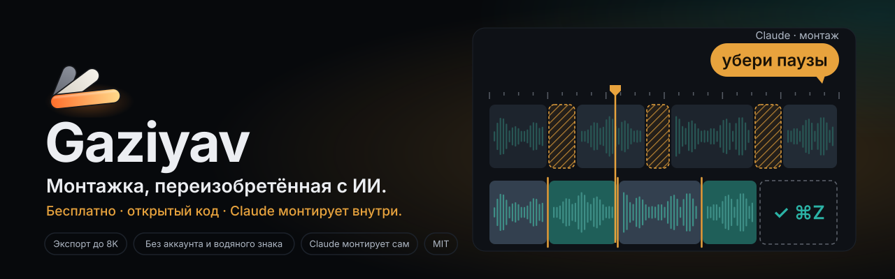

Бесплатная монтажка для рилсов, тиктоков и шортсов
Открытый код, альтернатива CapCut. Попробуйте прямо здесь: ничего не нужно ставить, аккаунт не нужен.
Открыть редактор Скачать для macOS Экскурсия →
Ваши файлы остаются в этом браузере. Только липсинк, ИИ-фото и ИИ-видео, если вы запускаете их своим ключом, отправляют в fal.ai то, что им нужно.

Одни правила для любого клипа
Резка, подрезка, сдвиг, прилипание и отмена работают одинаково для любого клипа. Титры, переходы, эффекты, 311 музыкальных треков и 2514 звуков, темы, экспорт точно до кадра.
Claude монтирует прямо в Gaziyav
В приложении для Mac Claude монтирует ваш открытый проект через коннектор (MCP). Каждый шаг появляется на таймлайне и отменяется ⌘Z. Без кредитов и API-ключа.
Без аккаунта и водяного знака
Открытый код. Проекты остаются в браузере или в файле на вашем диске. После первого открытия редактор работает без интернета.
Приложение для Mac
Всё то же, плюс Claude, клип по ссылке, публикация из редактора, голос из текста и остальной ИИ на устройстве. Для Mac на Apple silicon с macOS 14 и новее. Файл для скачивания один — та же полная сборка, в которой монтирует сам автор.
На Windows, Linux и любом другом компьютере работайте прямо здесь, в браузере.
Ещё в браузере
- На вашем ключе fal.ai (бета): липсинк (напишите новую реплику, и то же лицо её произнесёт), ИИ-фото и ИИ-видео. Цена видна до каждого запуска. В приложении для Mac липсинк дешевле: оно отправляет только речь.
- Установите редактор из меню браузера, чтобы открывать его как приложение. Он работает и без интернета.
Какой браузер
- Лучше всего Chrome или Edge: они кодируют видео прямо на странице и пишут экспорт сразу на диск, любой длины.
- Safari и Firefox: страница сразу скажет, чего этот браузер не умеет и что работает.
- Субтитры из речи работают прямо на странице. Claude, голос из текста, клип по ссылке и публикация есть только в приложении для Mac.